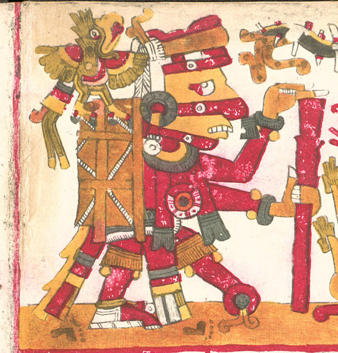
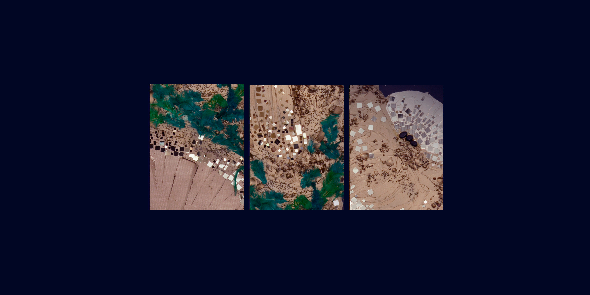

Tezcatlipoca // Invisible-et-Impalpable

Tezcatlipoca // Invisible-et-Impalpable
Coeur de la montagne
Tezcatlipoca parle par votre bouche
et votre bouche est sa bouche
et votre langue est sa langue
votre visage est son visage
et il vous revêtit de son autorité
il vous donna des dents et des griffes
pour être craint et révéré.
— Chant nahua (Bernardino de Sahagùn)
été 2026
Premier Soleil

Paris 2026
150 × 50 cm
Peinture Acrylique / Medium / Divers sur Toile

Tezcatlipoca // Invisible-et-Impalpable
Le premier soleil, qui avait été créé par les quatre dieux primordiaux, était celui de Tezcatlipoca. Il dura « 13 fois 52 ans ». La terre était peuplée de géants qui arrachaient les arbres et se nourrissaient de glands. Tezcatlipoca reçut un coup de bâton de Quetzalcóatl, tomba à l'eau, puis se transforma en jaguar et tua les géants.
Le deuxième soleil était celui de Quetzalcóatl. Il dura lui aussi « 13 fois 52 ans ». À cette époque, les macehuales (gens du peuple en nahuatl) ne mangeaient que des pignons. Tezcatlipoca, qui s'était transformé en jaguar, donna à Quetzalcóatl une ruade qui le fit tomber, provoquant un vent tellement fort qu'il emporta ce dernier et tous les macehuales. Il n'en resta que quelques-uns dans l'air, qui furent métamorphosés en singes.
- Les Traditions de l'Amérique ancienne, F. Schwarz